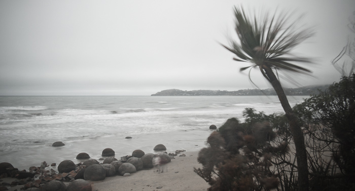

모에라키, 오타고 반도
9시간 가까이 잠을 자고 일어났지만, 전날의 피로는 풀리지 않았습니다. 어제의 여행은 26시간, 아니 새벽에 인천공항으로 갔던 시간까지 포함하면 30시간의 강행군이었습니다. 그렇게 무리하게 움직여서 생긴 피로가 쉽사리 풀리지 않은 것이 당연하겠지요. 아침에 간단하게 먹고 9시에 출발하기로 했던 일정은 10시가 조금 넘어서야 [Holiday Park][]를 나설 수 있게 되었습니다.
밤에는 몰랐는데 아침에 보니 참 많은 캠핑카가 주차되어 있었습니다. 이렇게 많은 캠핑카가 뉴질랜드 전역의 수많은 홀리데이 파크에 있을 것입니다. 이렇게 돌아다닐 수 있는 환경이 잘 마련되어 있는 것이 뉴질랜드를 캠핑카의 천국으로 만든 한 요인일 것입니다. 오아마루 외곽에 있는 이 홀리데이 파크의 공기는 상쾌했습니다. 사실 뉴질랜드 어느 곳을 가더라도 공기가 맑다는 느낌을 항상 가질 수 있었습니다.
날씨는 어제와 오늘 모두 구름이 많고 간혹 비가 내리는 날씨였습니다. 신혼여행인데 날씨가 맑지 않으니 흥이 나지 않을 만도 하지만, 우리 부부는 그저 새로움에 눈이 휘둥그레져서 날씨는 상관하지도 않고 마냥 싱글벙글합니다.
Moeraki Boulders
목적지는 Moeraki Boulders입니다. 오아마루에서 얼마 멀지 않은 35km 거리에 있는 해안입니다. Moeraki Boulders의 바다는 전날 보았던 Pareora의 바다와 다르지 않습니다. 똑같이 광활한, 거대한, 맹렬한 바다, 거센 바람이 있는 바다, 뉴질랜드의 동쪽 해안입니다. 그러나 Moeraki Boulders에는 독특한 것이 있어 관광객의 발걸음을 잡습니다.
바로 바위 입니다. 모에라키의 바위는 다른 바닷가에서 볼 수 있는 바위와 다릅니다. 일반적인 바닷가의 바위는 풍화작용으로 인해 잘게 다듬어진 둥근 모양이거나, 큰 바위는 파도에 의해 일부가 깨어진 모양입니다. 모에라키에도 그런 바위가 있습니다. 그리고 조금은 다른 방식으로 생성된 바위도 있습니다. 이 바위는 화학작용을 통해 내부에 핵이 만들어지고 주변에 단단한 물질이 생성되면서 공처럼 둥근 모양으로 자라난 바위입니다. 깎여서 작아지는 바위가 아닌 자라난 바위라는 점이 특이합니다.
실제로 보면 정말 놀랍습니다. 이런 바위가 존재한다는 것도 뉴질랜드에 오기 전엔 알지 못했었습니다. 그런데 눈앞에 바위가 있고, 깨어진 바위는 그 내부가 어떻게 생성되었는지를 가늠하게 해 줍니다. 아내와 함께 신기한 눈으로 이리 찍고 저리 찍으며 시간을 보냈습니다.

Dunedin
더니든에 도착하니 여기는 오아마루와는 다르게 매우 큰 도시였습니다. 뉴질랜드 남섬에서 크라이스트처치 다음으로 큰 도시라 합니다. 더니든 푯말을 본 후에도 중심지까지 가는데도 꽤 많은 시간이 걸렸습니다. 아기자기한 모습의 건물들이 늘어서 있는 전형적인 유럽풍의 도시를 감탄하며 들어갔습니다. 중심가인 Octagon에 주차하려니 주차할 공간이 없었습니다. 8각형의 도로를 뱅글뱅글 돌다가 겨우 주차 공간이 생겨서 차를 세워두고 내릴 수 있었습니다.
[i-site][]에서 [Holiday Park][]를 예약하고 오늘의 주된 여행 루트인 오타고 반도 관광신청을 하려 했습니다. 오타고 반도관광이 유명한 이유는 알바트로스(Albatross, 신천옹) 때문입니다. 엄청난 날개 크기로 유명하고 한 번 날개를 펼치면 며칠 동안 접지 않는 것으로 유명합니다. 그 오타고 반도 관광을 예약하려는데 1시 반에 시작하는 관광이 막 지나 버렸다고 하네요. 오타고 반도는 길이 복잡하다기에 버스로 투어하는 것을 다들 추천하는 곳이었습니다. 그런데 버스가 떠나 버렸으니, 이대로 하루를 더 머물고 아침에 여행을 하든지 아니면 직접 차를 몰고 가든지 해야 할 수 밖에 없었죠. 결국, 유람선을 타기 위해 덩치 큰 캠퍼밴을 이끌고 뉴질랜드에서 가장 구불구불한 길을 달리는 사태가 일어났습니다. ㅜ.ㅜ
차선은 좁을대로 좁아서 왼쪽 바퀴와 오른쪽 바퀴는 차선과 맞물려 돌아갑니다. 급기야 High Cliff Road는 아예 중앙선조차 없었습니다. 이름에서 알 수 있듯이 한쪽은 절벽으로 이루어져 자칫 잘못하면 데굴데굴 구르게 생겼습니다. 게다가 날씨 탓인지 안개가 자욱해서 코앞도 잘 보이지 않는 상황이었죠. 뉴질랜드 온 지 이틀 만에 이런 난관에 봉착하게 될 줄은 몰랐습니다. 운전에 그래도 조금은 익숙한 저에게도 아직 우핸들 좌측통행을 경험한 지 이틀째에 낯선 교통환경의 뉴질랜드 도로, 그것도 한쪽은 절벽인 도로를 운전하려니 긴장감에 손에 땀이 납니다.
겨우겨우 유람선을 탈 장소인 Wellers Rock에 도착했습니다. 안개가 자욱합니다. 그런데 안개가 땅에서는 멀리까지 깔끔하게 잘 보이는데 눈을 조금만 들면 바다 안개로 인해 아무것도 보이질 않았습니다. 알바트로스를 볼 수는 있을까 걱정스럽습니다. 그래도 여기까지 온 것이 아까워서 배를 타고 알바트로스의 서식지까지 나갔습니다. 그러나 날씨 탓인지 절벽에 있는 알바트로스는 그저 앉아 있기만 합니다. 힘차게 날아가는 Royal Albatross를 보고 싶었는데 아쉬움만 가득했습니다. 파도는 거세서 배의 봉을 단단히 붙잡고 있느라 진이 다 빠질 정도였습니다.
그렇게 아쉬움에 파묻혀 있을 때 같이 탄 안내자가 저에게 허공 한 지점을 가리키며 '알바트로스'라고 외쳤습니다. 아무것도 보이지 않는 구름만 있을 뿐인데 뭐가 있나 싶어서 배를 탈 때 제공한 쌍안경으로 그곳을 보았습니다. 안개속에 희미하게 알바트로스가 보였습니다! 다른 새와는 구별되게 날개는 비정상적으로 컸습니다. 그리고 시야에서 사라지는 동안 단 한 번도 날갯짓을 하지 않은 채 우아하게 활공만 하고 있었습니다. 안내자도 신이 나서인지 그제야 이것저것 설명해 주는데, 안내자 말로는 한 번 날면 3~5일은 기본으로 날며, 심지어 뉴질랜드에서 남 아메리카를 다녀오는 예도 있다고 합니다. 그 거리가 왕복 15,000km가 넘는 거리이니 대단한 녀석들이죠.
하지만 그 알바트로스가 사라지고 다시는 날고 있는 알바트로스를 보지 못했습니다. 유람선 관람을 마친 후, 오아마루에서 보지 못했던 펭귄을 보기 위해 Penguin Beach에 갔지만, 1시간 보는 것에 1인당 50달러라는 소리에 기겁하고 그대로 나와버렸습니다. 펭귄이야 뉴질랜드 동쪽 해안 전역에 퍼져 있는 녀석들이니 캐틀린스에서도 볼 수 있을 거란 생각에 돈이 더 아까웠었나 봅니다.
돌아오는 길에 Larnarch 성에 들렀는데 아깝게도 10분이 늦어서 구경하지 못했습니다. 내려져 있는 차단막이 차의 진입을 굳게 막고 있었죠. 그래도 차는 돌리라고 차단막을 올려주더군요. 슬쩍 차 돌리면서 성으로 들어가는 길만 보며 눈물만 주룩주룩 흘리고 되돌아왔습니다.
오타고 반도 투어는 제대로 하지도 못했습니다. 기억 속에 남아있는 것은 구불구불한 길, 절벽, 그리고 안개 낀 바다, 거친 파도밖에 없습니다. 뭐, 여행이란 이런 일도 있고 저런 일도 있는 거라며 위안으로 삼아보지만 내심 아쉬운 것은 사실입니다.
더니든에 도착하니 배가 무척이나 고팠습니다. 사 먹기엔 전날의 엄청난 양을 생각하니 엄두가 나질 않았습니다. 오늘 저녁은 직접 해먹기로 했습니다. 시내 마트에 들러서 먹음직스러운 스테이크 고기와 소스, 소금, 후추, 그리고 샐러드와 드레싱을 샀습니다. 고기가 정말 싸더군요. 사자마자 서둘러 [Holiday Park][]로 가서 주차하고 곧장 주방으로 달려갔습니다. 그래서 [Holiday Park][]가 어찌 생겼는지 자세히 보지도 못했죠. 사실 [Holiday Park][]가 바닷가 바로 옆이라는 말에 이곳을 선택했는데 바다는 보지도 못하고 나왔습니다.
스테이크를 굽습니다. 처음 굽는 스테이크라 주변 사람들 굽는 것 곁눈질해가며 슬쩍 따라 하며 굽습니다. 그런데 쉽지가 않네요. 겉은 갈색으로 잘 익어가는데, 안에는 여전히 핏덩어리입니다. 결국, 겉이 너무 타버릴 것 같아 대충 익었다 싶어서 먹습니다. 핏기가 있는 게 거의 레어 수준입니다. 그래도 제 배는 무조건 "맛있다!"고 외치고 있었습니다.
더니든 마트에서 스파게티도 샀고 신라면도 샀으니, 길에서 다시 한번 잔치를 벌일 수 있을 것 같아 흐뭇합니다.
[Holiday Park][]에서 자리를 펴고 차 뒷문을 열고 그대로 하늘을 보았습니다. 구름은 조금 있었지만, 한국에서와는 비교되지 않을 정도로 투명한 밤하늘이 보입니다. 남쪽이라 그런지 별자리는 낯설지만 그래도 수많은 별이 보이는 광경은 아름답습니다. 사진에서 보이는 마젤란성운1도 남쪽에서만 볼 수 있는 멋진 성운입니다. 그 멋진 광경을 카메라 하나로 담으려 하지만 볼품없는 사진들만 찍히네요. Star tracker나 Toast같은 간이 적도의 만이라도 있었으면 좀 더 나은 사진이 찍혔을 텐데 아쉽습니다.
그렇게 아내와 이런저런 이야기를 하며 이틀째 밤을 마무리합니다. 생각보다 편한 침대 위에서 하늘을 보며 이야기하는 느낌은 경험해보지 않으면 잘 모를 편안함을 안겨주더군요.
-
두 번째 사진의 중앙 오른쪽 세로 빛줄기의 바로 왼쪽에 희미하게 구름처럼 보이는 것이 마젤란 성운입니다. ↩